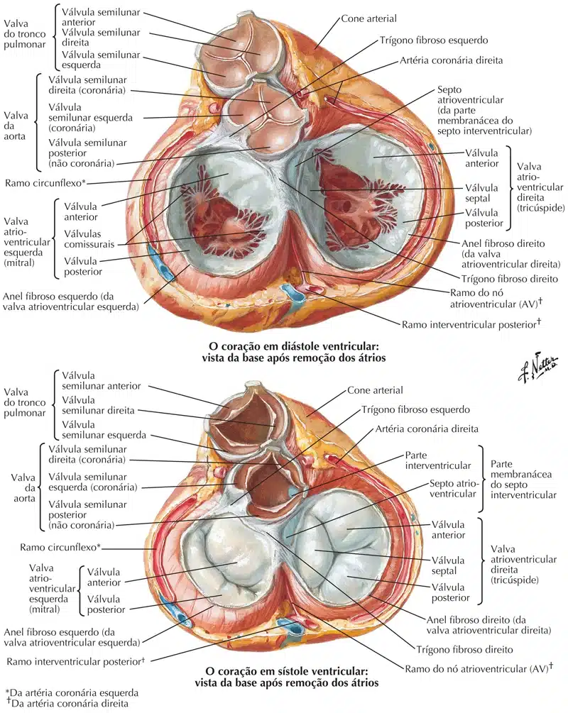
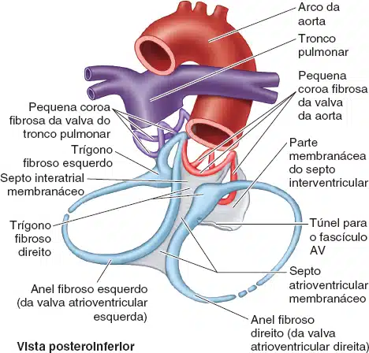
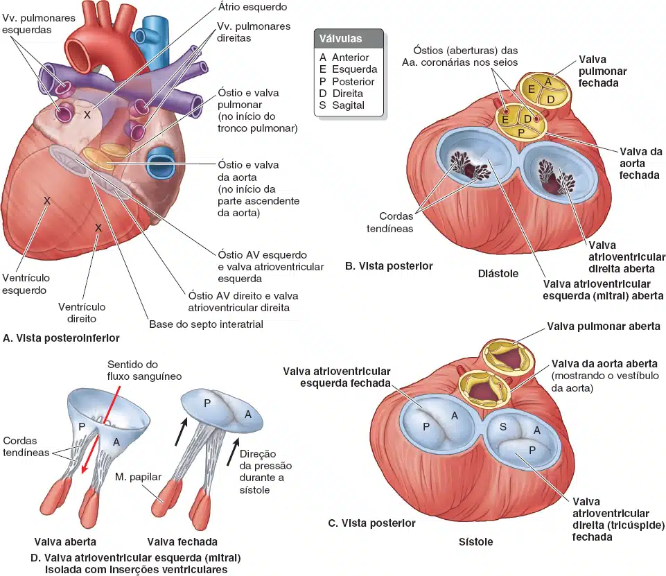

Os óstios atrioventriculares são providos de dispositivos que permitem a passagem do sangue somente do átrio para o ventrículo: são as valvas atrioventriculares direita e esquerda.
A valva é formada por uma lâmina de tecido conjuntivo denso, recoberta em ambas as faces pelo endocárdio.
Esta lâmina é descontínua, apresentando subdivisões incompletas, as quais recebem o nome de válvulas ou cúspides.
A valva átrio-ventricular direita possui três válvulas e é conhecida como valva tricúspide;
A valva atrioventricular esquerda apresenta duas válvulas e a chamam de valva bicúspide ou mitral.

Também conhecido como esqueleto ou anel fibroso.
Consiste de uma massa continua de tecido conjuntivo fibroso que circunda os óstios atrioventriculares e os óstios do tronco pulmonar e da a. aorta.
Nele se inserem as valvas dos orifícios atrioventriculares e dos orifícios arteriais, além de camadas musculares.

No início da diástole ventricular ou sístole atrial as valvas da aorta e do tronco pulmonar são fechadas e as valvas atrioventriculares direita (tricúspide) e esquerda (mitral) se abrem como visto em B.
Logo após o início da sístole (contração e esvaziamento ventriculares), as valvas atrioventriculares direita e esquerda se fecham e as valvas da aorta e do tronco pulmonar se abrem (C).
D – Influência da pressão/fluxo do sangue na abertura e no fechamento normais da valva atrioventricular esquerda (valva mitral).

As cordas tendíneas originam-se dos ápices dos músculos papilares, que são projeções musculares cônicas com bases fixadas à parede ventricular.
Os músculos papilares começam a se contrair antes da contração do ventrículo direito, tensionando as cordas tendíneas e aproximando as válvulas.
Como as cordas estão fixadas a faces adjacentes de duas válvulas, elas evitam a separação das válvulas e sua inversão quando é aplicada tensão às cordas tendíneas e mantida durante toda a contração ventricular (sístole) – isto é, impede o prolapso (entrada no átrio direito) das válvulas da valva atrioventricular direita quando a pressão ventricular aumenta.
Assim, a regurgitação (fluxo retrógrado) de sangue do ventrículo direito para o átrio direito durante a sístole ventricular é impedida pelas válvulas.
As três válvulas semilunares da valva do tronco pulmonar (anterior, direita e esquerda), bem como as válvulas semilunares da valva da aorta (posterior, direita e esquerda), são côncavas quando vistas superiormente.
As valvas semilunares não têm cordas tendíneas para sustentá-las.
Têm área menor do que as válvulas das valvas AV, e a força exercida sobre elas é menor que a metade da força exercida sobre as válvulas das valvas atrioventriculares direita e esquerda.
As válvulas projetam-se para a artéria, mas são pressionadas em direção (e não contra) às suas paredes quando o sangue deixa o ventrículo.
Após o relaxamento do ventrículo (diástole), a retração elástica da parede do tronco pulmonar ou da aorta força o sangue de volta para o coração.
No entanto, as válvulas fecham-se com um estalido, como um guarda-chuva apanhado pelo vento, quando há inversão do fluxo sanguíneo.
Elas se aproximam para fechar por completo o óstio, sustentando umas às outras quando suas bases se tocam (encontram) e evitando o retorno de qualquer quantidade significativa de sangue para o ventrículo.